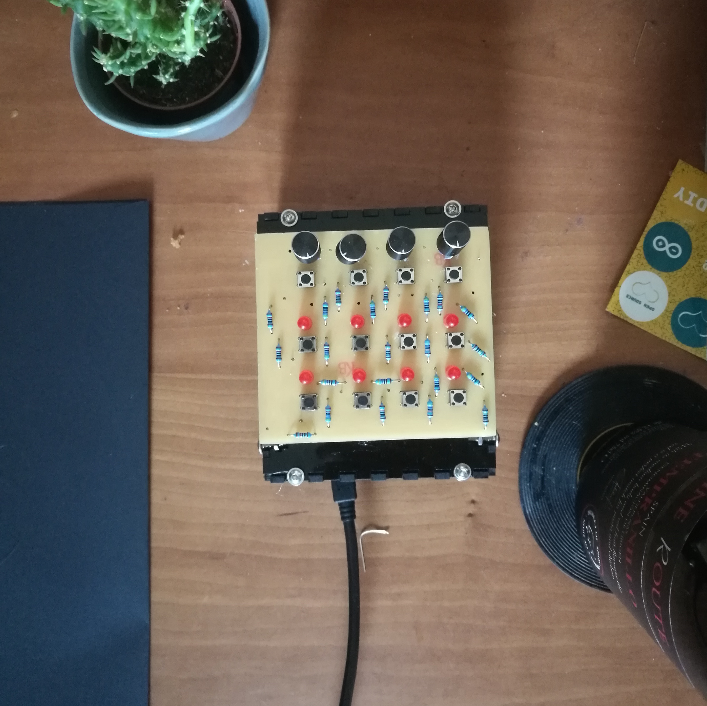
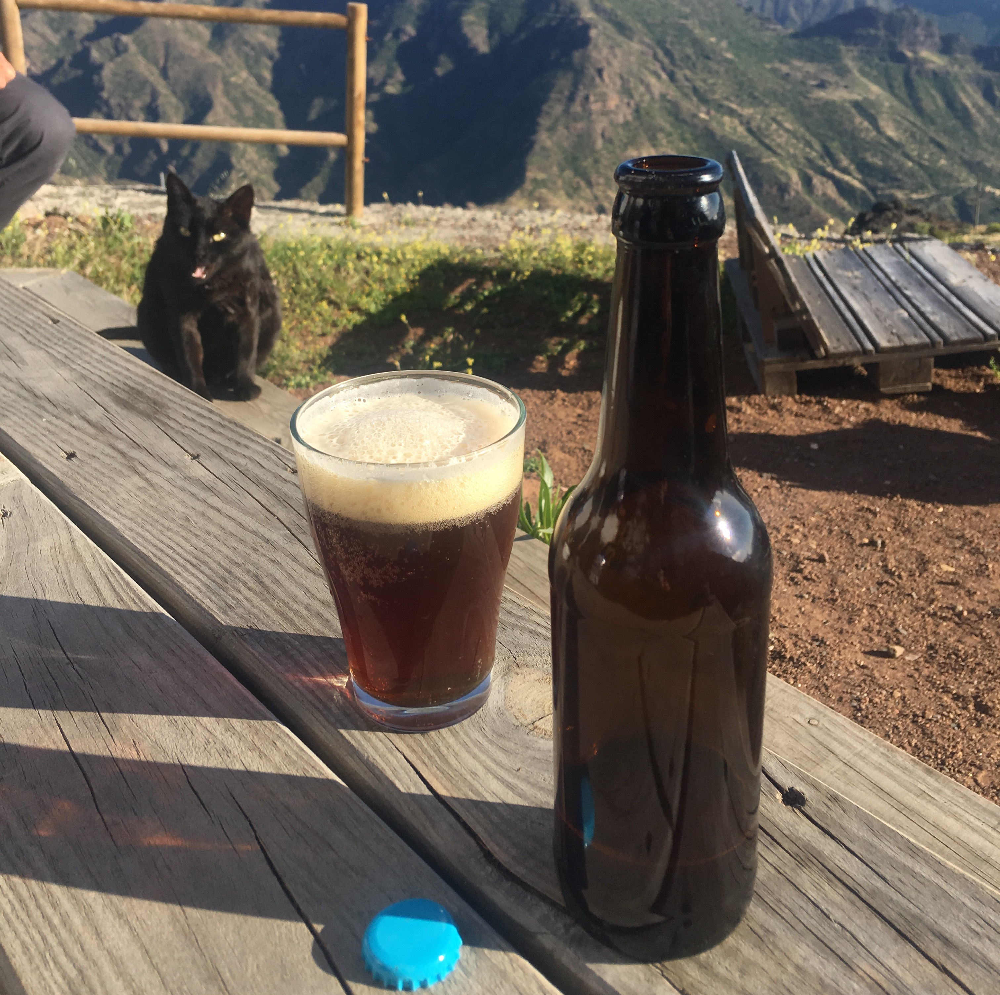

Edmund Oetgen/
Creative Technologist/
London/
/

A generative shell that can be manipulated by a users facial expressions, using computer vision and machine learning.

D.W.A.I.N., a novel digital drum machine using machine learning. Neural networks are used to create arbitrary mappings between knobs and various synthesis parameters. Audio Samples/

Software for generating beer recipes using swarm intelligence.